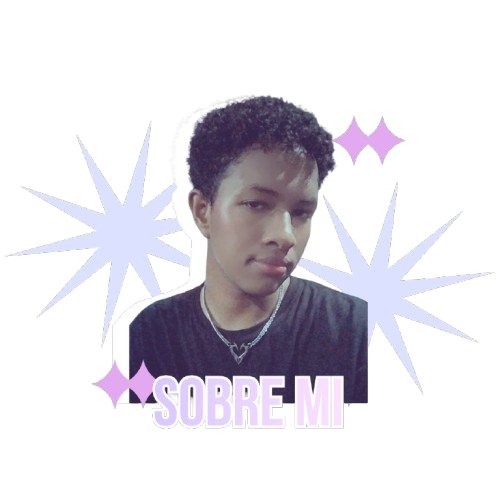
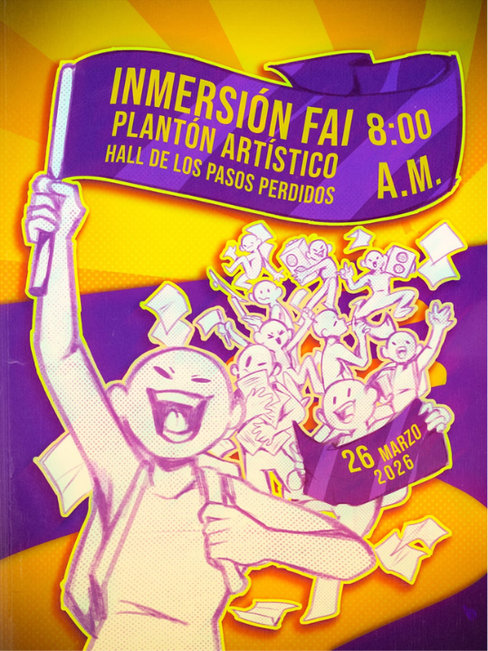
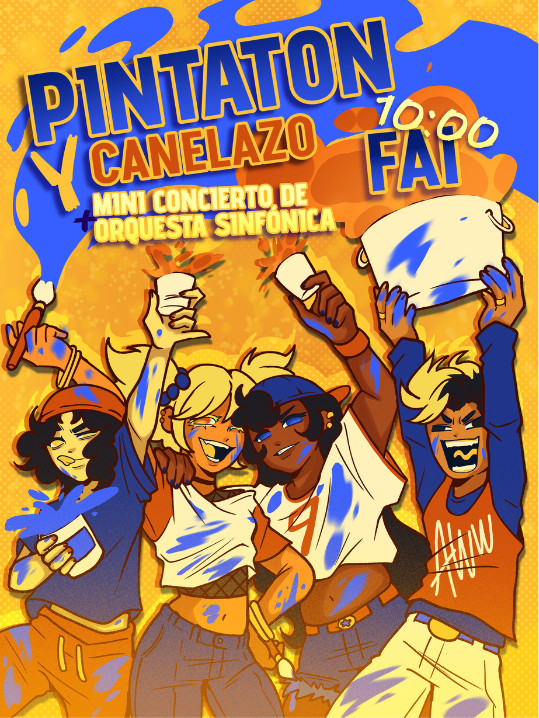
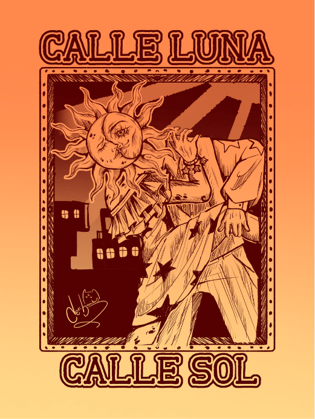
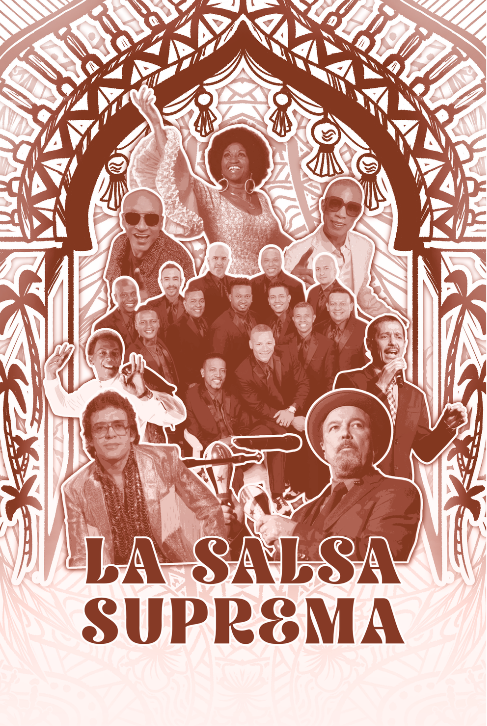
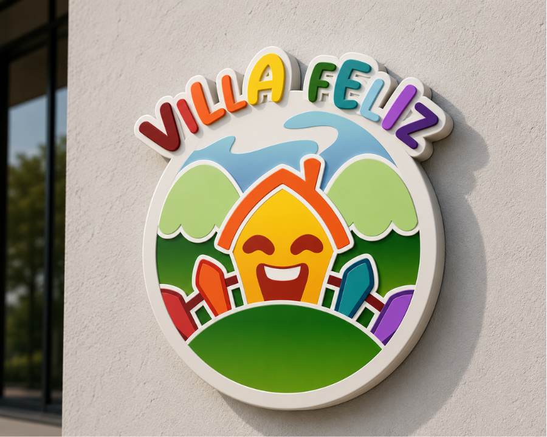
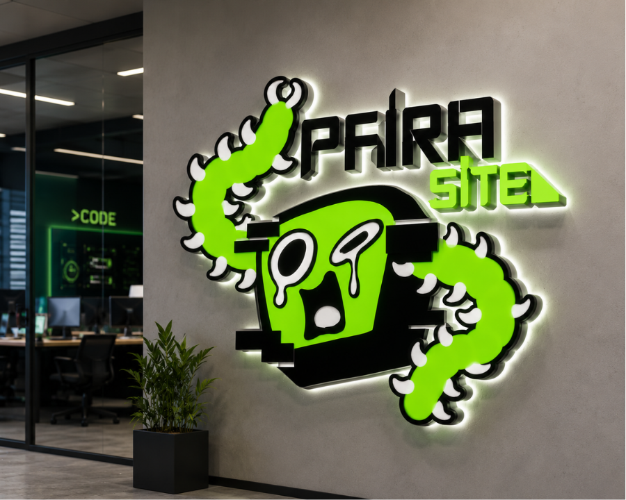

KEVIN ECHAVARRÍA — 2026Sobre mí.
Soy Kevin, estudiante de quinto semestre de Diseño Gráfico. Genero y materializo ideas creativas con efectividad gracias a mi dominio de la ilustración, adaptándome a diversos estilos y necesidades para crear propuestas visuales versátiles.
Mi conocimiento técnico abarca desde el dibujo y la composición digital hasta la edición de vídeo, la animación básica y la postproducción de sonido e imagen, competencias que aplico para ofrecer soluciones visuales completas y adaptadas a distintos soportes y formatos.
Herramientas.
Un universo de herramientas para transformar ideas en imágenes.
Dibujo · Composición digital · Edición de vídeo · Animación básica · Postproducción de sonido e imagen
Proyectos.
Una selección de afiches y proyectos de identidad visual. Explora cada burbuja para conocer el proceso y ver las piezas.
Afiches
02 PROYECTOS
01 / AFICHES
Afiches
estudiantiles
EXPLORAR ↗
Afiches estudiantiles
Participé activamente en el desarrollo de dos propuestas de diseño para eventos de movilización estudiantil, asumiendo la responsabilidad de crear todas las ilustraciones.
Este trabajo implicó traducir mensajes de carácter social y colectivo en piezas visuales claras y sugerentes, logrando que cada ilustración reforzara la identidad de cada evento y conectara de manera efectiva con su público objetivo.


02 / EDITORIAL Revista EXPLORAR ↗
Revista
Junto con un compañero, realizamos una revista de bajo presupuesto, proyecto en el que me encargué personalmente de construir su identidad visual y de ejecutar las ilustraciones.
Mi labor consistió en optimizar los recursos disponibles mediante soluciones gráficas ingeniosas, logrando que la publicación mantuviera un acabado profesional y una narrativa visual sólida sin requerir grandes inversiones.


Logotipos
02 PROYECTOS
03 / MARCA
Rediseño
de marca
EXPLORAR ↗
Logo de marca
En un ejercicio académico, llevé a cabo el rediseño de marca para una empresa de juegos infantiles, ocupándome de la propuesta definitiva de su logotipo.
El proceso implicó estudiar a fondo su identidad visual original para mantener los elementos que le otorgan carácter icónico, al tiempo que introduje ajustes orientados a modernizar su imagen.

04 / IDENTIDAD
Identidad
de grupo
EXPLORAR ↗
Logo de marca
En un proyecto realizado de forma independiente, me encargué de construir desde cero la identidad visual de un grupo de diseñadores de juegos.
Para ello, desarrollé un sistema gráfico coherente que culminó en la propuesta final de un logotipo, concebido para sintetizar la personalidad del colectivo y diferenciarlo en su entorno competitivo.

Gracias
por ver.
¿Tienes una idea en mente? Hablemos.
Kev.andre669@gmail.com ↗